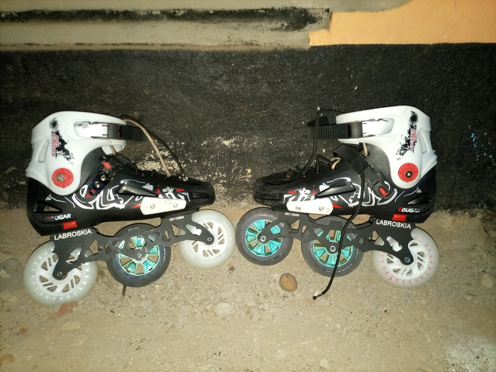

Freestyle skating is a creative and expressive form of skating that emphasizes fluidity and flow. Skaters often perform spins, jumps, and dance-like movements to music, and can use a variety of skating styles, including inline skates, quads, or ice skates.
Urban Skating
Urban skating is a style of skating that focuses on navigating city environments, such as streets, parks, and public spaces. Skaters often use obstacles, such as benches, stairs, and rails, to perform tricks and stunts. Inline skates are typically used in urban skating, although some skaters use quads as well.

Aggressive Skating
Aggressive skating is a high-intensity style of skating that involves performing tricks and stunts on obstacles, such as ramps, rails, and stairs. Skaters typically use aggressive inline skates, which have smaller wheels and a more durable construction than other types of skates.